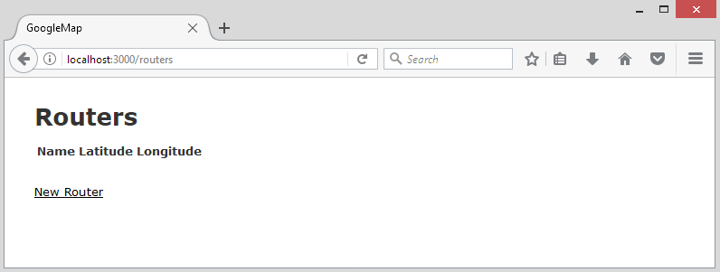
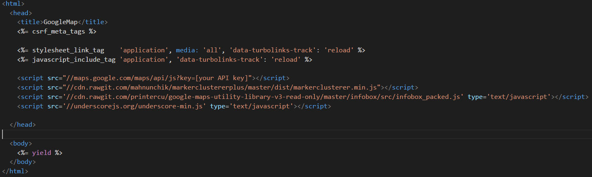
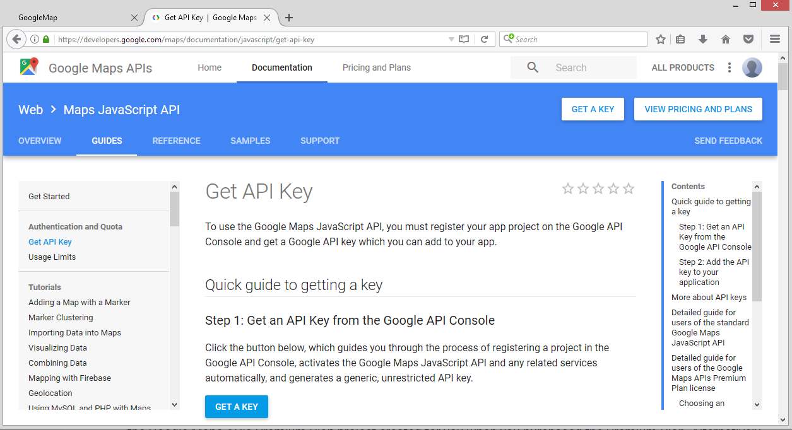
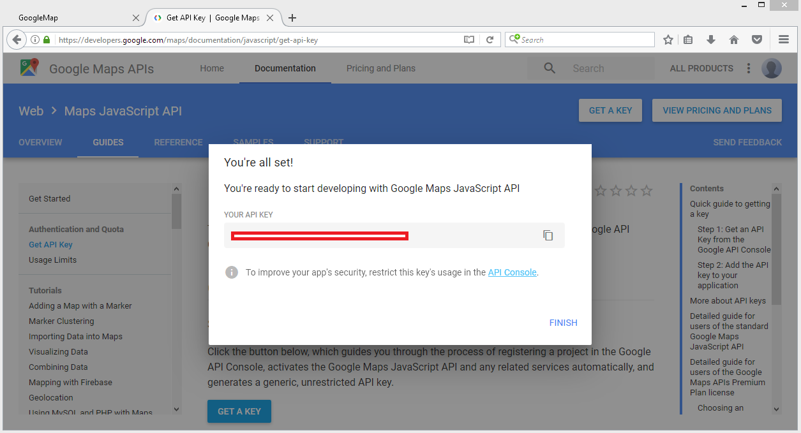
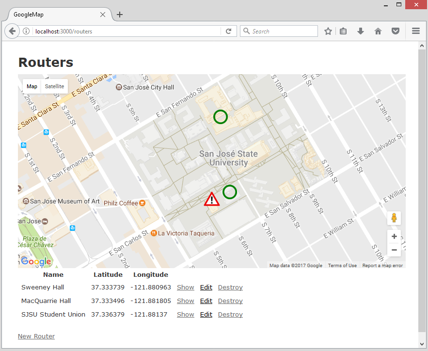
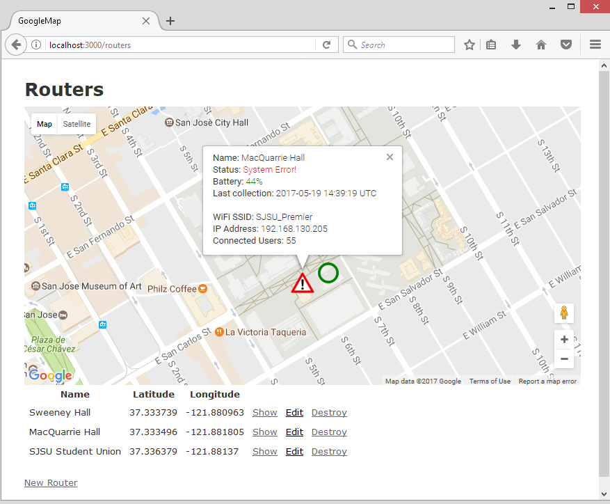
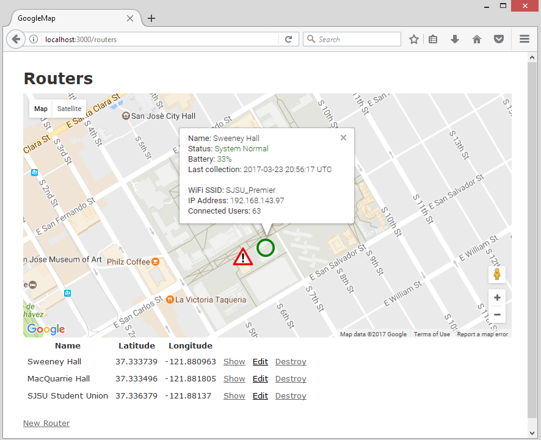

Last modified: Thu Aug 16 2018 22:49:02 GMT+0800 (Malay Peninsula Standard Time)
Chapter 6. Google Map
Having a dynamic generated Google Map on a Website enhances the look. It is not hard to implement Google Map to Ruby on Rails Web Application as there is already a Gem, gmaps4rails, that helps us to do the job.
In this example, I am going to build a sample application that will show all the Wireless Router information on Google Map. It serve as a dashboard for Networking Engineer.
6.1 Initial Setup
A location on Google Map contains two piece of information: longitude and latitude. In order for me to generate the information dynamically from database, I will use scaffold command to generate MVC components.
Assuming that we are generating a page for Router to show each Wireless Router’s information and each router contains a location (longitude and latitude) and a name, we would use the command below.
rails generate scaffold Router name:string latitude:float longitude:float
Then, migrate the database by using the command below.
rake db:migrate
Figure 6.1.1 shows the index page of Router with three fields, name, latitude, and longitude.
Figure 6.1.1: Index of Router
6.2 Configure gmaps4rails
Head to gmaps4rails repository or follow the instruction below to install and configure the Gem. The Gem contains a lot of feature and you may want to consider reading the Readme file in their repository.
To begin, add the Gem to gemfile and perform bundle install to install the newly added Gem.
gem 'gmaps4rails'
Then add the code in Table 6.2.1 to the respective file. Do notice that there is a section (highlighted in yellow) that require you to fill in your API key. We will go through the process on how to obtain an API key from Google in Chapter 6.3.
As a side note, you can always place the code at the beginning of the View where you want your map to show. If you are placing the script in the location mentioned in Table 6.2.1, it will serve as global.
Table 6.2.1: Code to add to Application
MyApp/app/views/layouts/application.html.erb
#refer to the repository for code
<script src="//maps.google.com/maps/api/js?key=[your API key]"></script>
<script src="//cdn.rawgit.com/mahnunchik/markerclustererplus/master/dist/markerclusterer.min.js"></script>
<script src='//cdn.rawgit.com/printercu/google-maps-utility-library-v3-read-only/master/infobox/src/infobox_packed.js' type='text/javascript'></script>
<script src='//underscorejs.org/underscore-min.js' type='text/javascript'></script>
Figure 6.2.1 shows the formatting for the code in Table 6.2.1.

Figure 6.2.1: Syntax formatting for code in Table 6.2.1
Now, we have to add the asset pipeline. Follow the instruction in Table 6.2.2 to add the required asset pipeline to your application.
Table 6.2.2: Code to add to Application
#MyApp/app/javascripts/application.js
//= require gmaps/google
6.3 Obtain API Key
To obtain an API key for your project, head to Google Maps APIs website to obtain a key. Figure 6.3.1 shows the website where you will be redirected to. Press “GET A KEY”, agree with the terms and condition, and generate a key.

Figure 6.3.1: Generate an API key

Figure 6.3.2: Your API Key
Figure 6.3.2 shows the screen that you will obtain after a key is generated. Replace [your API key] with the key that shown on the screen. Square bracket is not required and should be removed.
6.4 Add Google Map To View
To add a Google Map to your view, follow the instruction in Table 6.4.1. The code below will add a Map template to your view. Since the Map is written in Javascript, the Javascript code is required and is part of the Google Map.
Table 6.4.1: Code to add to View
#MyApp/app/views/routers/index.html.erb
<div style='width: 800px;'>
<div id="map" style='width: 800px; height: 400px;'></div>
</div>
<script type="text/javascript">
handler = Gmaps.build('Google');
handler.buildMap({ provider: {}, internal: {id: 'map'}}, function(){
markers = handler.addMarkers([
{
"lat": 37.3333945,
"lng": -121.8806499,
"picture": {
"width": 32,
"height": 32
},
"infowindow": "SJSU"
}
]);
handler.bounds.extendWith(markers);
handler.fitMapToBounds();
});
</script>
Figure 6.4.1 shows a Google Map that is added to our view. In the Google Map, we can see that there is a Location Marker. In the location marker, there is a message. The information of the marker can be altered based on your need. Those information can be found in Table 6.4.1.
If you are trying to create a static Google Map with static information, you can stop here. The next section, Chapter 6.5, will discuss how to create a dynamic Google Map.

Figure 6.4.1: Google Map added to Router
6.5 Dynamic Map Marker
We have successfully created and inserted a Google Map to our Router index page. In order for our Google Map to fetch and display the information from our database, we have to create our own method in the controller.
Table 6.5.1: Code to add to Controller
#MyApp/app/views/controllers/routers_controller.rb
#Add load_routers and replaced index with the code below
def load_routers
@routers_default = Gmaps4rails.build_markers(Router.all) do |plot, marker|
marker.lat plot.latitude
marker.lng plot.longitude
@status = rand(1..4)
@battery = rand(10..90)
@ip = "192.168."+rand(0..255).to_s+"."+rand(15..250).to_s
@connected = rand(50..100)
if @status == 1
url_alert = "/good.png"
@status == "Normal"
else
url_alert = "/alert.png"
end
marker.picture({
"url" => url_alert,
"width" => 35,
"height" => 30
})
marker.infowindow render_to_string(:partial => "/routers/info",
:locals => {:name => plot.name, :battery => @battery, :date => rand(6.months.ago..Time.now), :ip => @ip, :connected => @connected })
end
end
def index
load_routers
@routers = Router.all
end
In Table 6.5.1, we first create a method called load_routers. In the method, fetch each row of the database and rename the object name from latitude and longitude to lat and lng. The reason of why a conversion is needed is due to the library that we are using accepts the parameter lat and lng.
Then, we use rand method to generate a few random values to serve as the information on the marker box. You can always replace the object with the values from database. There is a conditional statement that check the status. If the status is equal to one, it will assign url_alert object to /good.png or /alert.png if it is not equal to one. good.png and alert.png are two pictures that are located in MyApp/public/ folder. They serve as two status marker symbols. Then, the two status images will then be resized to the respective width and height.
All the information will then be parsed from the controller to the view. A partial is then created to show the information of each marker window. Follow the instruction in Table 6.5.2 to create a partial and add the code.
Table 6.5.2: Partial and code to add
#File to create
#MyApp/app/views/routers/_info.html.erb
<style type="text/css">
#low { color: red; }
#medium { color: orange; }
#high { color: green; }
</style>
<b>Name:</b> <%= name %><br>
<% if @battery <30 %>
<b>Status:</b> <span id="low">Low Battery!</span><br>
<% elsif @status == 1 %>
<b>Status:</b> <span id="high">System Normal</span><br>
<% elsif @status == 2 %>
<b>Status:</b> <span id="medium">High Network Traffic</span><br>
<% elsif @status == 3 %>
<b>Status:</b> <span id="low">System Error!</span><br>
<% else %>
<b>Status:</b> <span id="low">High Network Traffic</span><br>
<% end %>
<% if battery <= 30 %>
<b>Battery:</b> <span id="low"><%= battery %>%</span><br>
<% else %>
<b>Battery:</b> <span id="high"><%= battery %>%</span><br>
<% end %>
<b>Last collection:</b> <%= date %><br><br>
<b>WiFi SSID:</b> SJSU_Premier<br>
<b>IP Address:</b> <%= ip %><br>
<b>Connected Users:</b> <%= connected %>
In order to work with the modification that we have made in controller and partial, we have to removed Javascript in view and replaced it with the code in Table 6.5.3.
Table 6.5.1: Code to add to View
#MyApp/app/views/routers/index.html.erb
#Code to remove
<script type="text/javascript">
handler = Gmaps.build('Google');
handler.buildMap({ provider: {}, internal: {id: 'map'}}, function(){
markers = handler.addMarkers([
{
"lat": 37.3333945,
"lng": -121.8806499,
"picture": {
"width": 32,
"height": 32
},
"infowindow": "SJSU"
}
]);
handler.bounds.extendWith(markers);
handler.fitMapToBounds();
});
</script>
#Code to add
<script type="text/javascript">
handler = Gmaps.build('Google');
handler.buildMap({ provider: {}, internal: {id: 'map'}}, function(){
markers = handler.addMarkers(<%=raw @routers_default.to_json %>);
handler.bounds.extendWith(markers);
handler.fitMapToBounds();
});
</script>
Obtain some Longitude and Latitude values from Google Map and insert it to the database. The final result of the modification in Chapter 6.5 is shown in Figure 6.5.1, Figure 6.5.2 and Figure 6.5.3. Since we are using random value method, on each refresh, the value will be different for each object.

Figure 6.5.1: Google Map in Router index page

Figure 6.5.2: Google Map with Custom Map Marker in Router index page

Figure 6.5.3: Google Map with Custom Map Marker in Router index page